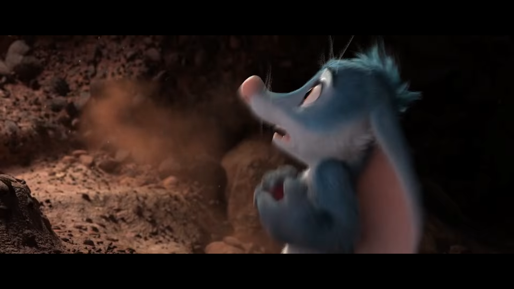
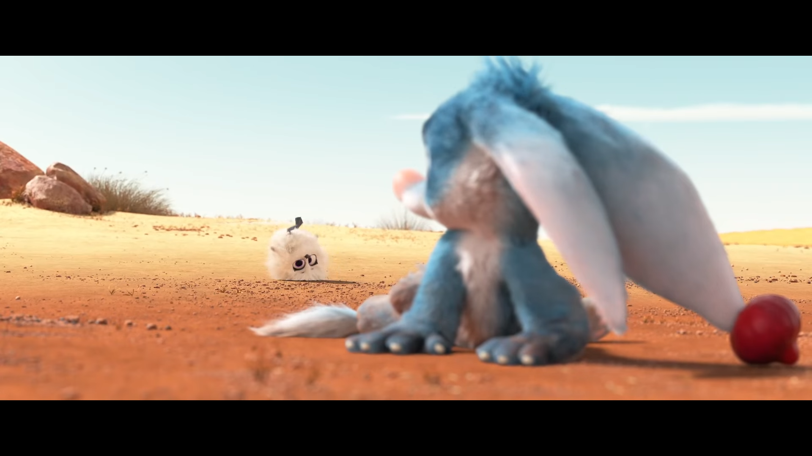
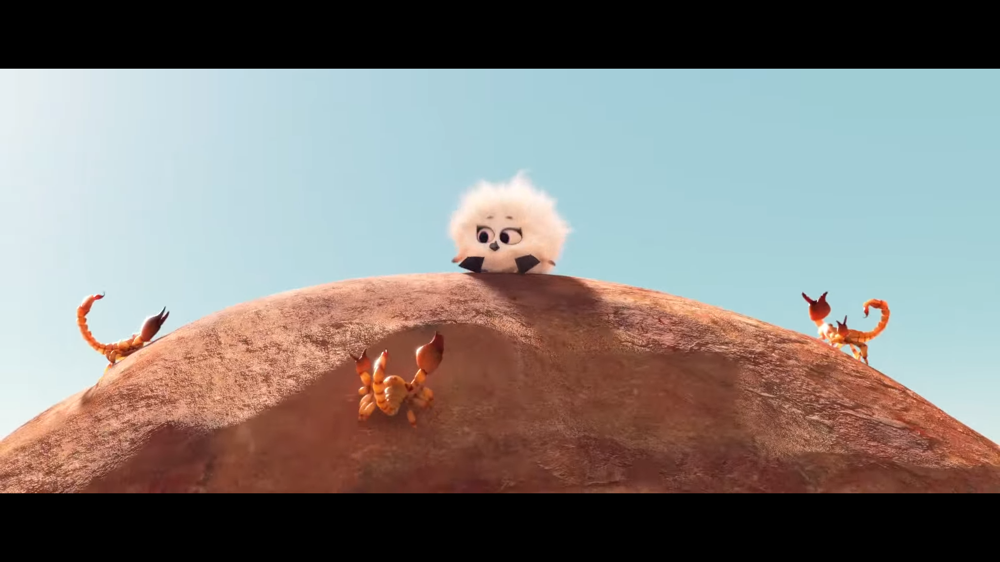
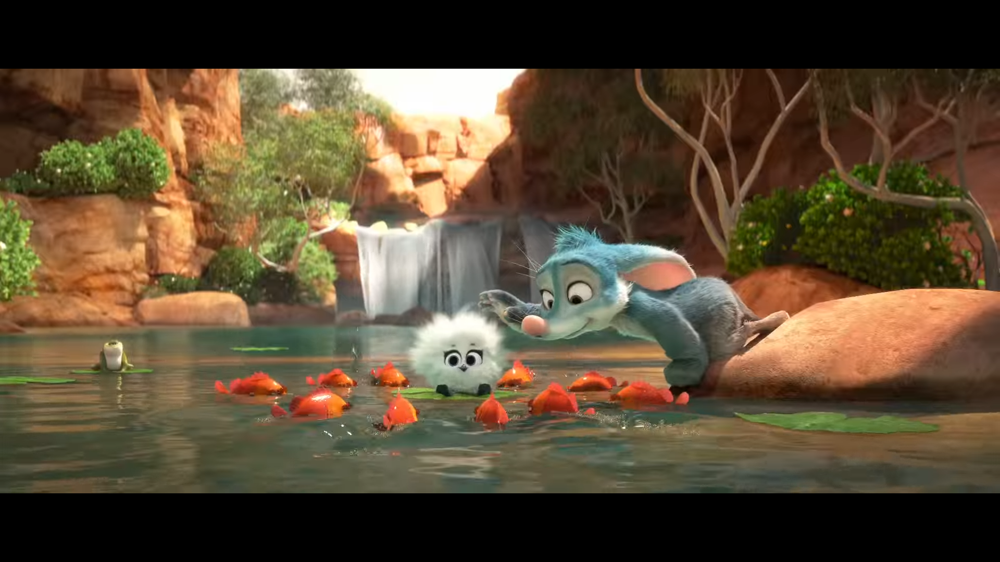
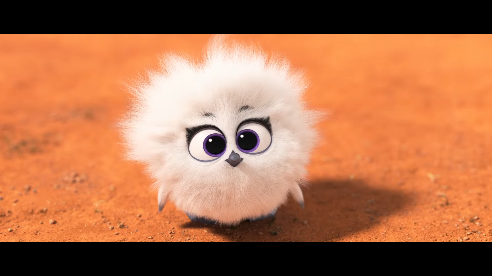
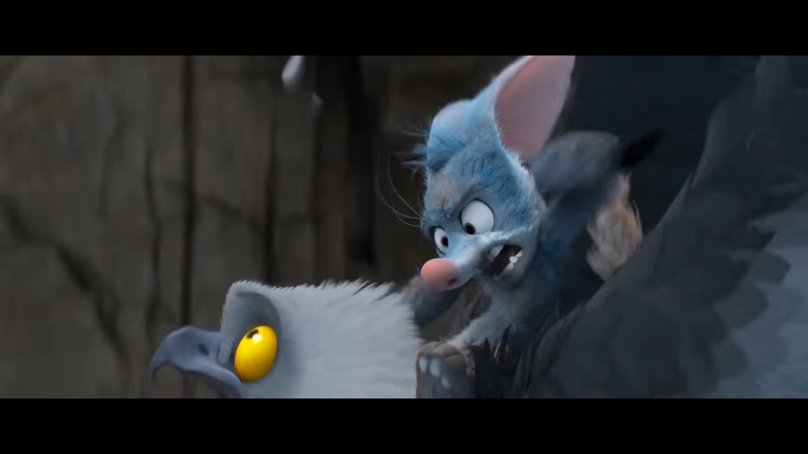
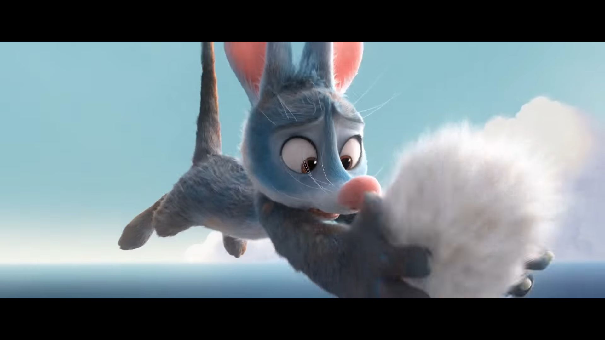
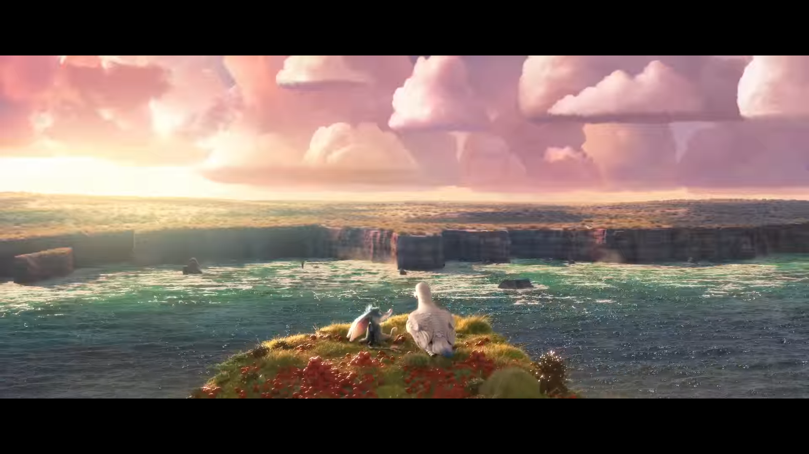

Короткометражный мультфильм · 2018
Маленький герой. Большая пустыня. Неожиданная дружба.
Перри — маленький билби, живущий в суровой австралийской пустыне. Каждый его день — это игра в прятки со смертью: орлы кружат в небе, змеи шипят в песках, крокодилы подстерегают у воды.
Но Перри ловок и осторожен. Он знает каждое укрытие, каждую трещину в земле. Его жизнь — размеренная, тихая, одинокая.
Во время обычной вылазки за пропитанием Перри находит крошечного пушистого птенца альбатроса. Малыш совершенно не приспособлен к жизни в пустыне — он не умеет бояться, не знает хищников и сразу привязывается к угрюмому билби.
Перри пытается уйти. Но видит, что на беззащитного малыша уже открыли охоту местные хищники. И... не может бросить.
Перри становится телохранителем. На их пути — гигантские орлы, ядовитые змеи, скорпионы и голодные крокодилы. Помоги билби провести птенца через пустыню!
🎮 Управление: ← → или A / D. На мобильном — касайся левой/правой части экрана.
В финале героев настигает самый крупный и опасный хищник. Он уже почти схватил малыша. И тогда Перри делает то, чего от него никто не ждал — бросается в бой, рискуя собственной жизнью.
Маленький билби против огромной тени. Но в его сердце теперь не страх — а любовь к новому другу.
Перри удаётся одолеть врага и довести птенца до побережья, где живут другие альбатросы. Крепкий, окрылённый малыш уплывает к сородичам.
Билби смотрит ему вслед — с грустью, но с чувством выполненного долга. Он больше не одинок. Он обрёл настоящего друга.
«Иногда самые маленькие герои совершают самые большие подвиги.»
Нажми на кадр, чтобы рассмотреть его в полном размере и листать коллекцию стрелками.








Наведи на карточку (или тапни на мобильном), чтобы узнать удивительные подробности о мультфильме и его героях.
В 2019 году «Билби» был номинирован на премию «Оскар» в категории «Лучший анимационный короткометражный фильм».
Режиссёр Пьер Перифе ранее работал над «Кунг-Фу Пандой» и «Монстрами против пришельцев». «Билби» — его режиссёрский дебют.
Билби — настоящее сумчатое животное из Австралии. К сожалению, этот вид находится под угрозой вымирания из-за завезённых хищников.
Альбатросы — морские птицы и в пустыне не водятся. Но создатели пожертвовали реализмом ради трогательной истории дружбы.
Хронометраж мультфильма — около 8 минут. Но за это время авторы уместили целую эпическую историю с погонями, битвами и слезами.
Аниматоры DreamWorks специально изучали видео с настоящими билби, чтобы достоверно передать их движения, уши и характерный хвост.
Саундтрек записан живым оркестром. Музыка меняет настроение вместе с героем — от тревоги до нежности и триумфа.
В природе билби питаются насекомыми, личинками, семенами и даже грибами. В мультфильме Перри ищет именно такую добычу!